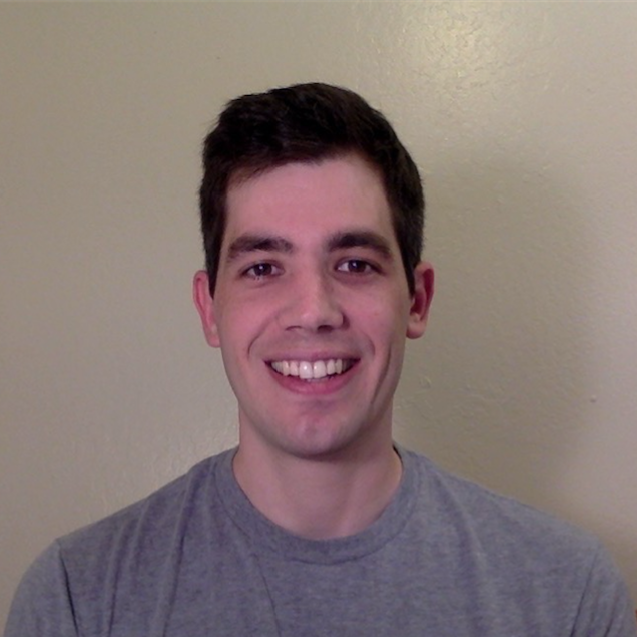

Jeffrey M. Epstein | |
|  |
I am a theoretical physicist broadly interested in quantum information and quantum computation. At present, I work as a Quantum Applications Engineer at Atom Computing in Berkeley, California, where we are building a quantum computer based on trapped neutral atoms. I'm always happy to talk to anyone interested in quantum information! I received my PhD in physics from UC Berkeley, where I was worked with Professors Kranthi Mandadapu and Birgitta Whaley. Before that, I obtained my masters at Perimeter institute in Waterloo, Ontario and my AB at Harvard College. For more information, please see my CV. Email me at jeffrey@atom-computing.com. |
Selected Publications(Google Scholar)Quantum InformationJME, KB Whaley, J Combes. Quantum noise limits for a class of nonlinear amplifiers. 2021 (arXiv) J Atalaya, S Zhang, MY Niu, A Babakhani, HCH Chan, JME, KB Whaley. Continuous quantum error correction for evolution under time-dependent Hamiltonians. 2021 (arXiv) JME, KB Whaley. Quantum Speed Limits for Quantum Information Processing Tasks. 2017 (arXiv) JME, AW Cross, E Magesan, JM Gambetta. Investigating the limits of randomized benchmarking protocols. 2014 (arXiv) Active MatterC Hargus, JME, KK Mandadapu. Odd Diffusivity of Chiral Random Motion. 2021 (arXiv) C Hargus, K Klymko, JME, KK Mandadapu. Time reversal symmetry breaking and odd viscosity in active fluids: Green-Kubo and NEMD results. 2020 (arXiv) JME, KK Mandadapu. Time reversal symmetry breaking in two-dimensional non-equilibrium viscous fluids. 2020 (arXiv) JME, K Klymko, KK Mandadapu. Statistical Mechanics of Transport Processes in Active Fluids II: Equations of Hydrodynamics for Active Brownian Particles. 2019 (arXiv) OtherNM Tubman, C Mejuto-Zaera, JME, D Hait, DS Levine, W Huggins, Z Jiang, JR McClean, R Babbush, M Head-Gordon, KB Whaley. Postponing the orthogonality catastrophe: efficient state preparation for electronic structure simulations on quantum devices. 2018 (arXiv) | |
NotesTranslation of letter communicating the original paper on the Soret effect Conserved Quantities of the Free Electromagnetic Field Some notes on quantum foundations Quantum search complexity, Grover's algorithm, Elitzur-Vaidman bomb detection — see here for other notes from CS 294 PSI masters essay on magic state computation and the stabilizer formalism Fourier transforms on discrete groups and the QFT | |